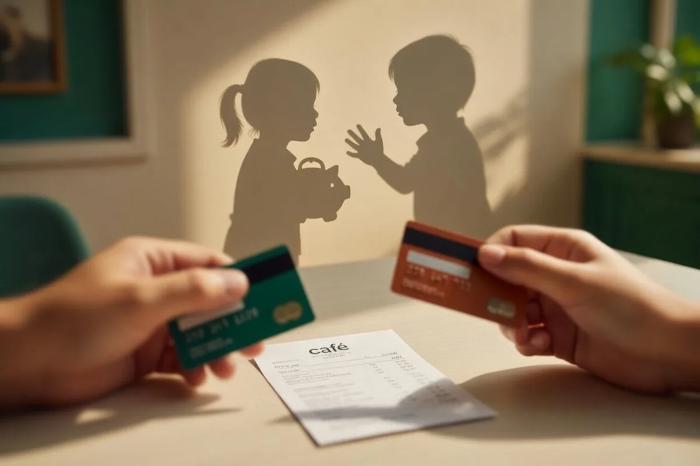
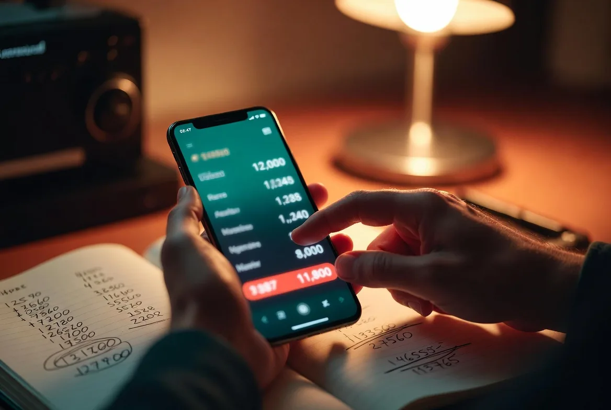

Вы наверняка узнаёте эту ситуацию: тяжёлый день на работе, конфликт с партнёром или просто тревожное ощущение «всё идёт не так» — и вот вы уже листаете маркетплейсы, добавляя в корзину то, что вчера казалось ненужным. Эмоциональный шопинг — один из самых распространённых, но малоосознаваемых способов справляться со стрессом. И он работает — но ненадолго и с серьёзными побочными эффектами.
Покупки в стрессе — это не слабость характера, а нейробиологическая реакция. Мозг использует шопинг как быстрый способ получить дофамин и временно заглушить тревогу.
Парадокс шопинга: почему покупки успокаивают и тревожат одновременно
С точки зрения эволюционной психологии, наши предки выживали благодаря накоплению ресурсов. Приобретение = безопасность. Эта древняя программа запускается каждый раз, когда мы что-то покупаем: мозг выделяет дофамин, и мы чувствуем удовлетворение.
Но в стрессе этот механизм работает особым образом. Кортизол — гормон стресса — повышает тревогу и создаёт неприятное внутреннее напряжение. Мозг ищет быстрый способ его снять, и шопинг оказывается под рукой: доступен 24/7, даёт мгновенную «награду», отвлекает от неприятных мыслей.
Почему «вылечить» эмоциональный шопинг простой силой воли сложно: когнитивные ресурсы в стрессе ограничены. Префронтальная кора, отвечающая за планирование и самоконтроль, работает хуже. А лимбическая система, управляющая импульсами, — активнее.
Проблема в том, что эффект краткосрочный. Когда дофаминовая волна спадает — через 20-40 минут, иногда раньше — на смену удовлетворению приходят:
- Чувство вины — за потраченные деньги, особенно если покупка была незапланированной
- Стресс от финансовых последствий — «опять потратил больше, чем могу»
- Пустота — покупка не решила изначальную проблему, которая вызвала тревогу
- Стыд — осознание того, что снова «поддался импульсу»
И цикл замыкается: новый стресс → новая попытка заглушить его покупкой → новое чувство вины → ещё больший стресс.

Что происходит в мозге во время эмоционального шопинга
Дофаминовая система награды
Процесс покупки активирует мезолимбический путь — ту же нейронную цепь, которая реагирует на еду, секс и одобрение социума. При виде желанного товара в вентральной покрышке выделяется дофамин, создавая ожидание удовольствия.
Ключевой момент: пик дофамина приходится на ожидание покупки, а не на саму покупку. Именно поэтому «охота» за товаром, добавление в корзину, оформление заказа даёт больше удовольствия, чем получение посылки. Многие люди даже не распаковывают купленное сразу — им было важно «поймать» эту волну.
Кортизол и тревожность
В состоянии хронического стресса уровень кортизола повышен. Этот гормон:
- Усиливает чувство тревоги и дискомфорта
- Снижает активность префронтальной коры (ответственной за рациональные решения)
- Усиливает импульсивность через активацию миндалевидного тела
В результате человек в стрессе принимает более рискованные финансовые решения, склонен к импульсивным тратам и плохо оценивает долгосрочные последствия.
МодельМы не покупаем вещи — мы покупаем эмоции, которые с ними связаны. Уверенность, принадлежность, контроль, комфорт. Проблема в том, что вещи дают эти эмоции очень ненадолго.
— из практики работы с эмоциональным шопингом
ABC-модель эмоционального шопинга
В когнитивно-поведенческой терапии используется ABC-модель для анализа поведения. Применим её к эмоциональным покупкам:
A — Activating event (Событие-активатор)
- Конфликт на работе
- Усталость
- Скука
- Одиночество
- Получение зарплаты
B — Beliefs (Убеждения)
- «Я заслуживаю награды»
- «Это сделает меня счастливее»
- «У меня всё под контролем»
- «Потом пожалею, если не куплю»
Краткосрочное: облегчение, подъём настроения. Долгосрочное: финансовые проблемы, усиление тревоги, чувство вины
Важный инсайт: мы думаем, что покупаем из-за события (A). На самом деле между событием и покупкой стоят наши убеждения (B). Два человека в одной ситуации могут реагировать совершенно по-разному — потому что у них разные убеждения о деньгах, наградах и способах справляться со стрессом.
Шесть эмоциональных триггеров компульсивных трат
Понимание своих триггеров — первый шаг к изменению. Вот шесть наиболее распространённых:
Упражнение для самодиагностики: Вспомните три последние импульсивные покупки. Что вы чувствовали за час до покупки? Что произошло в день покупки? Найдите общий паттерн — это ваш основной триггер.
Четыре КПТ-техники для контроля эмоциональных трат
Правило 24 часов
Простое, но мощное правило: любая необязательная покупка откладывается минимум на 24 часа.
- Увидели желанную вещь? Добавьте в закладки или корзину, но не оформляйте заказ.
- Поставьте напоминание через 24 часа.
- Когда сработает напоминание, задайте себе вопрос: «Всё ещё хочу это так же сильно?»
- Часто оказывается, что желание прошло — вместе с эмоцией, его вызвавшей.
Для покупок стоимостью выше определённой суммы (например, 5000₽) можно увеличить паузу до 7 дней. Это позволяет префронтальной коре «включиться» в принятие решения.
Дневник триггеров покупок
Цель: обнаружить связь между эмоциональным состоянием и импульсом к покупкам.
- Каждый раз, когда возникает желание купить что-то необязательное, запишите:
- Ситуация: где вы были, что делали, что происходило.
- Эмоция: что чувствовали перед желанием купить (тревога, скука, злость, грусть).
- Мысль: что пришло в голову («это поднимет мне настроение», «я заслуживаю»).
- Итог: купили или нет? Как себя чувствовали после?
Через 2–3 недели у вас появится карта своих триггеров. Вы увидите закономерности: «Каждый раз после звонка начальника я трачу деньги».
Вопрос «Что мне на самом деле нужно?»
Эта техника помогает отличить реальную потребность от эмоционального импульса.
- Когда появляется желание купить что-то, остановитесь.
- Задайте себе вопрос: «Что мне на самом деле нужно прямо сейчас?»
- Варианты ответов:
- Отдохнуть? → Возможно, нужен сон, а не новая вещь
- Почувствовать заботу? → Позвонить другу, принять ванну
- Победить скуку? → Найти занятие, проект, хобби
- Успокоить тревогу? → Прогулка, медитация, дыхание
- Удовлетворите реальную потребность другим способом.
Список альтернативных наград
Создайте заранее список способов позаботиться о себе, которые не связаны с тратами.
- Составьте список из 10–15 активностей, которые дают вам удовольствие или покой:
- Примеры: прогулка в парке, чтение, разговор с другом, ванна с солью, йога, просмотр сериала, готовка, творчество.
- Распечатайте список и положите видное место — на рабочий стол, на холодильник.
- Когда появляется импульс к покупке, обратитесь к списку — выберите альтернативу.
Важно: альтернатива должна быть доступна здесь и сейчас. Если в 11 вечера вам хочется купить блузку, «пойти на массаж» — не сработает. А «почитать книгу в тёплой ванне» — да.
Когда эмоциональный шопинг становится опасным: признаки онейромании
Импульсивные покупки и компульсивное расходование (онейромания) — разные вещи. Первое — поведенческий паттерн, второе — серьёзное расстройство, требующее профессиональной помощи.
Признаки, на которые стоит обратить внимание:
Если вы узнали себя в нескольких пунктах — это повод обратиться к психотерапевту. Онейромания успешно лечится с помощью КПТ, ДПДГ и групповой терапии. Вы не одни, и помощь доступна.

Как меняется отношение к деньгам: реалистичные сроки
Изменение паттерна эмоционального шопинга — процесс, который требует времени и терпения. Вот реалистичные ожидания:
2–4 недели
Осознание паттерна
- Вы начинаете замечать связь между эмоциями и желанием купить
- Применяете технику 24 часов
- Ведёте дневник триггеров
2–3 месяца
Укрепление навыков
- Техники становятся автоматичными
- Вы находите альтернативные способы справляться со стрессом
- Снижается частота импульсных покупок
6–12 месяцев
Новые паттерны
- Эмоциональный шопинг перестаёт быть основным способом копинга
- Вы контролируете траты даже в стрессе
- Отношения с деньгами становятся осознанными
При работе со специалистом
8–20 сессий КПТ
- Работа с глубинными убеждениями о деньгах
- Переработка травматического опыта (ДПДГ)
- Индивидуальная стратегия изменений
Хотите разобраться с эмоциональным шопингом?
Запишитесь на бесплатную 15-минутную консультацию — обсудим вашу ситуацию и выберем подходящий формат работы
Записаться в Telegram → Отвечаю в течение нескольких часов · Без обязательств